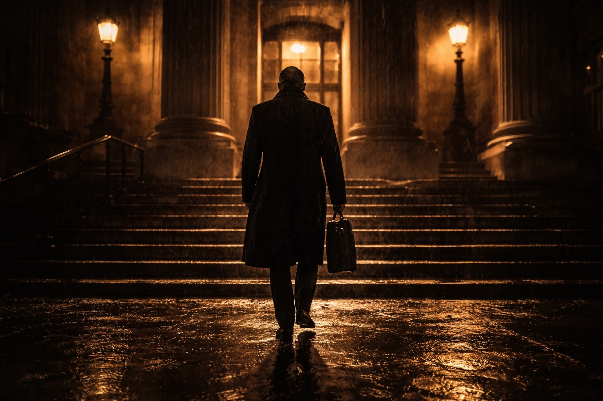

I now cite two rare examples of cases in which Establishment figures refused to participate in an unfair trial process. In doing so, they were cast as Outlaws. One was a senior High Court judge and the other a Queen’s Counsellor. They demonstrated, in discharging their duties under the law, that conflict with the police is inevitable. Discharging one’s professional duties does not involve turning a blind eye to wrongdoing. It came at a personal cost to both men.
A ‘Honey Trap’
In July 1992, Rachel Nickell was brutally murdered on Wimbledon Common, suffering 49 stab wounds. She had been sexually assaulted. Her young son was found by her side pleading with his mummy to “wake up”.
The Press launched into outraged headlines demanding this predator be arrested and the public demanded he be brought to justice. The problem, as the months passed by, was a lack of evidence. In its absence, the police interviewed over 500 suspects.
The police were under heightened pressure, which led them to instruct a criminal psychologist, Mr Paul Britton. He would feed the investigating officers a profile of the man capable of carrying out this heinous murder.
Britton stated the attacker would be a local man, a loner, someone who could not maintain relationships and acted out violent sexual acts in his mind. He would have an interest in the occult and knives. The attacker would be ‘odd’, as in the Jill Dando* case, which would aid the Press in vilifying the police’s main target when he was identified.
In this case, they landed upon Colin Stagg. An Operation was launched in which Britton was placed front and centre. His musings were received as gospel, and he no doubt revelled in this position of power. A female officer was tasked with befriending Stagg. Over time ‘Lizzie’, her pseudonym, would offer up sexual favours if Stagg confessed to crimes. Top of Lizzie’s hit list was the Rachael Nickell murder.
The Operation was a ‘honey trap’ and, over time, Lizzie’s role, authored and sanctioned by the Officer in Charge and Britton, became shocking in its depravity. She stated she wanted to be humiliated and would become defenceless in order to fulfil both of their sexual dreams. She fantasised about a man holding a knife to her skin and her desire to have sadistic sex with him.
Stagg was indeed aroused, but he did not confess to Nickell’s murder. He even indicated he wished he had carried out that murder in order to benefit from Lizzie’s sexual largesse. In one covertly taped conversation, the police believed he had stated something only the murderer of Nickell would have known.
With the mounting cost of the Operation, and no other man in the frame, the cops nabbed Stagg. He was paraded before a grateful Press and public who would have preferred a summary execution. “Hang him” they chanted, as his prison van rolled into the grounds of the Old Bailey.
The High Court judge assigned to R v Stagg was Justice Harry Ognall, who hailed from Leeds. He was very much his own man. Ognall quickly assessed that, from reading the case papers, the prosecution was fatally flawed. It was tainted by an obscene undercover Operation that bordered on insanity. Perhaps Britton would have been better tasked with profiling the officers in charge of the operation – a fantasist, prone to error of judgement and likely to pursue false leads…
Ognall listened to detailed submissions by both Crown and defence QCs before he delivered a withering judgement. He ruled the police had shown “excessive zeal”, and placed a non-scientist in a position of power and influence he did not warrant.
The police’s attempts to incarcerate Stagg had been by “deceptive conduct of the grossest kind”. He refused to permit the ‘undercover’ evidence into the trial process, and the Crown was left with no alternative but to end its case. The fall out from Stagg being released back onto the streets was cataclysmic.
The Press launched into Ognall with a ferocity unheard of in English legal history. He and Stagg were now ‘as one’ in their minds. One had murdered Nickell, and the other had butchered the criminal law. No one came to Ognall’s aid.
The reality was the CPS and Crown counsel had abrogated their duties. This prosecution should never have gotten off the ground. But they were not brave enough to carry out those duties and front up the boys in blue who had cooked up this debacle of an Operation.
Instead, they deposited their undercover slurry on Ognall’s lap. They appreciated he would criticise the ‘honey trap’, and warn the jury of the dangers of convicting on its evidence, but they never ever believed he would have the ‘bottle’ to throw the case out.
Ognall had acted with decency and dignity. He accepted he could not give Stagg a fair trial, nor would he pass the buck to a jury as Crown counsel had done to him. He was simply upholding the rule of law and maintaining England and Wales were not police states.
This was lost within headlines and articles berating Ognall, and there were calls for him to be ‘defrocked’ after decades of impeccable service. This was his reward for being portrayed as an Outlaw. It demonstrated Outlaws can, and should, appear from all ranks in the profession, not just the defence.
Ognall could not have known if Stagg was innocent or guilty. That was not his role, it was a jury’s. A judge’s role is to apply the law without fear or favour and without reference to the gravity of the crime. Without assessing if the accused is an oddity or an intellect.
However, we now know Stagg was an innocent man. Advances in DNA nailed, in 2004, a psychopath named Robert Napper. He was arrested and convicted of the Nickell crime. Chillingly, Napper had been convicted of killing Samantha Bisset and her four-year-old daughter Jazmine in November 1993, sixteen months after Rachel Nickell was slain. He was ‘housed’ in Broadmoor. This man must’ve been smiling and enjoying the incompetency of the ‘honey trap’ whilst he lined up his next victims.
Ognall could not stand to be acquitted. He was never honoured or applauded for his outing of a corrupted undercover operation. Years later, Ognall (showing his intellect) summed up the position with grace and dignity:
“Arrogance is rarely supplanted by decency.”
It is worthy of note that Ognall had been junior counsel for the Crown in R v Sutcliffe. His leader, Attorney General Sir Michael Havers, had wanted to accept a plea to manslaughter from the Yorkshire Ripper, in light of the psychiatric reports from both sides.
In a round the table conference with the police and experts, Ognall stood his ground. On the sound basis the experts had placed far too much reliance on what Peter Sutcliffe had relayed to them. Ognall won the argument and Sutcliffe was convicted of the Ripper murders. One senior detective recalled an expert stating “Sir Michael was a gentleman”, but did not care much for the “gorilla” he had brought from the North!
Gorillas are placid vegetarian beasts, but stand their ground if confronted – whoever appears in front of them. The police were stung by a rejection of honey traps, and were chastened enough to overhaul plans for any such forays into covertly attempting to set someone up. They put in place checks and balances, before any undercover operation was incepted. The CPS should be involved, together with counsel, before the coppers set off, given they, too, were mauled by the State’s gorilla.
You will read in a later chapter that, far from an improvement in the sanity of undercover deployments, the police in Nottinghamshire (and elsewhere) shoved these covert officers into the lives of unsuspecting females. These women were connected with protest groups the police wanted to infiltrate. They were let loose for years, and this sanctioned systematic abuse of power led these undercover officers to sire children to these innocent women. They were viewed by the cops as nothing more than intelligence fodder.
More Operation Shag than Stagg.
Den of Iniquity
Stuart Denney began his career preaching to worshippers from a pulpit before he transgressed to submissions before twelve men and women of a jury. He was well-versed in Matthew 7:7, and other scriptures he could deploy in defence of the innocent.
He was much in demand as defence counsel in the North West as he was respected and admired by the solicitors who instructed him.
He had been overlooked a number of times, as he sought elevation to the status of Queen’s Counsellor. It is a fact of life that counsel who mainly prosecute rise through the ranks more quickly to wearing ermine. Nevertheless, Denney became a QC.
I began instructing him on a regular basis once I opened an office in Salford. I conducted the heavyweight cases which require a criminal solicitor to be able to instruct a QC. He was a courageous advocate, and came into his own in the heat of battle in a courtroom.
He was not great at pre-trial preparation as, after a day before a jury, his penchant was to enjoy a glass or two of white wine at El Rincon, a tapas bar close to his chambers in Manchester city centre. He is fine company and a generous man – unlike many at the ‘Bar’.
I halted instructing him after a series of cases in which I felt my Outlaw’s spurs were being clipped. My friendship and respect for his opinion had the effect that I was submitting to less robust confrontations with those prosecuting. Not an Outlaw’s style.
On one occasion in El Rincon, he recounted to me the last case he had conducted for the CPS. We were discussing the widespread breaches of the CPIA and the ineffectiveness of the CPS and he thought he could assist in my thought process.
QCs are expected by the Bar Council to carry out one or two cases for the prosecution, even if their caseload is defence work – even defence lawyers have to ‘keep their hands in’ with the occasional journey to the dark side. Apparently it is a ‘public service’, which begs the question what a QC’s defence role is?
Denney, like Ognall, is a Northerner and “gorilla” would equally apply to this advocate. He is not a man to cross or underestimate. He was quite content to prosecute for the CPS, but he demanded due process. He would monitor the case for the Crown, as is the duty of both a judge and Crown counsel, to keep material being withheld from the defence under review.
Denney had been instructed in a major drugs case and, albeit I cannot recollect the exact circumstances, I proffer the following:
There were five men in the dock charged with the supply of Class A drugs. The charges had been brought after a 15 months’ long Operation. Denney became concerned about a piece of evidence, which was crucial to obtaining convictions, but which he sensed had not been obtained lawfully. He asked to see a number of documents, including the diaries of police officers involved in this aspect of the case. The defence were oblivious to Denney’s concerns, and (being in ignorance) were not mounting applications to challenge this evidence.
Days passed, and the CPS’ lawyer in court kept promising Denney the material had been requested from the police. Enough was enough. “Tell the OIC and disclosure officer to be outside court at 4:30 so I can hold a conference with them”, he paused, “otherwise I will raise this issue with the judge in his chambers.”
At 4:30, when the court rose for the day, Denney met the officers in a small conference room outside. Not only had they not brought the material, they announced it would not be produced! Denney voiced his concern, at which the OIC bluntly stated the non-disclosure had been approved by senior officers.
“Well, it has not been approved by me or the trial judge”, he stated sternly, before adding: “unless I receive this material by 10:30 in the morning, I will end the prosecution by offering no further evidence.”
Denney stood up and left the officers in their seats, open-mouthed. There was no need for further discussion. If the police would not submit to a fair trial process, Denney would not be party to it. The police hold no power to withhold material required by Crown counsel, here a QC. They are not (yet) above the law.
The next day at 10:15, Denney was informed the police’s position had not altered. Being a man of his word, he rose to his feet at 10:30 and discontinued the case. There were gasps in the court and the dock, as no one had an inkling the case had hit the rocks.
And Denney’s reward for his professional action? He received a notification from the CPS that he would not be receiving any further briefs. It shocked me at the time, as it does again as I repeat it for this book. It exposes a dirty truth. The police know the counsel for CPS to instruct - those at the Bar who will not ask the kind of questions which may lead a prosecution into choppy waters. Counsel who will be financially rewarded for conducting regular complex cases for the boys in blue.
And it is this (cess) pool of chosen counsel from which it is decided who should be elevated to the judiciary. Worse, the CPS, rather than supporting a QC and backing him to ensure the police altered their working practices, peremptorily binned him. Suppression of evidence was endorsed by the Chief Crown Prosecutor and, no doubt, fulsome apologies made to the Chief Constable for this insurrection by an ex-cleric. Perhaps not an Outlaw after all, but a legal terrorist.
Page 1 of 1